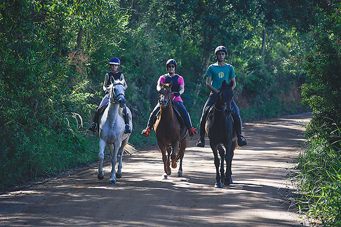

Passeio a cavalo
Respirar ar puro, contemplar a natureza, sentir o vento no rosto. Mais do que um lazer, cavalgar tem benefícios terapêuticos e físicos. Excelente programa para casais, famílias e grupos de amigos.
Como funciona o passeio
Se você está precisando sair da rotina e recarregar as energias, venha experimentar o passeio a cavalo na Conexão Equestre! Cavalgar é uma atividade para todas as idades: recebemos pessoas de todos os níveis de experiência e faixa etária. Quem já monta ou faz aulas de equitação também pode agendar uma cavalgada para conhecer nossos cavalos e estrutura, e usar as técnicas aprendidas em ambiente externo, com cavalos fortes e bem treinados.
Oferecemos todo o equipamento necessário para garantir conforto e segurança. Antes de sair, um guia especializado passa as instruções básicas de condução e trato com os cavalos, indica o animal mais adequado ao perfil de cada pessoa e acompanha todo o percurso, entre as montanhas da Serra da Mantiqueira. Temos cavalos de diversos portes e personalidades, bem como pôneis para crianças pequenas.
Existe uma liberdade que somente em cima do cavalo você pode sentir. Venha viver essa Conexão!